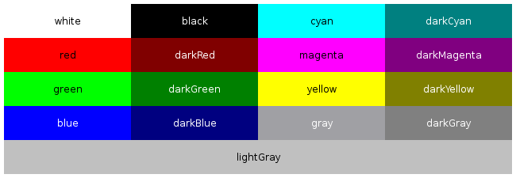

Для работы с цветом в Qt существует класс QColor. Обычно, объект этого класса инициализируется нужным цветом при создании. Цвет в конструкторе QColor задается разными способами. Самые популярные - задать цвет с помощью компонентов, например так:
QColor(255, 0, 0) // RGB
QColor(0, 255, 0, 127) // RGBA
... либо цвет задается с помощью строки:
QColor("#52AF80")
Формат строки может быть следующим:
Кроме того, в Qt существуют готовые глобальные цвета, которые входят в класс QColor. Они расположены в пространстве имен Qt::, и используются так:
Qt::cyan
Таблица этих предопределенных цветов выглядит следующим образом:

|
Constant |
Value |
Description |
|
Qt::white |
3 |
|
|
Qt::black |
2 |
|
|
Qt::red |
7 |
|
|
Qt::darkRed |
13 |
|
|
Qt::green |
8 |
|
|
Qt::darkGreen |
14 |
|
|
Qt::blue |
9 |
|
|
Qt::darkBlue |
15 |
|
|
Qt::cyan |
10 |
|
|
Qt::darkCyan |
16 |
|
|
Qt::magenta |
11 |
|
|
Qt::darkMagenta |
17 |
|
|
Qt::yellow |
12 |
|
|
Qt::darkYellow |
18 |
|
|
Qt::gray |
5 |
|
|
Qt::darkGray |
4 |
|
|
Qt::lightGray |
6 |
|
|
Qt::transparent |
19 |
a transparent black value (i.e., QColor(0, 0, 0, 0)) |
|
Qt::color0 |
0 |
0 pixel value (for bitmaps) |
|
Qt::color1 |
1 |
1 pixel value (for bitmaps) |
Следует обратить внимание, что запись, к примеру, QColor("blue") и Qt::blue - это не одно и то же, это могут быть немного разные цвета.